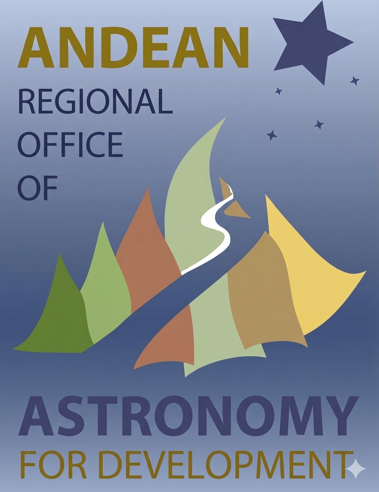

Proyecto de Ciencia Ciudadana contra la Contaminación Lumínica
Puedes usar el GPS o ingresar las coordenadas manualmente abajo:
2. Elige la carta estelar que mejor represente las estrellas más tenues que logres ver a simple vista: